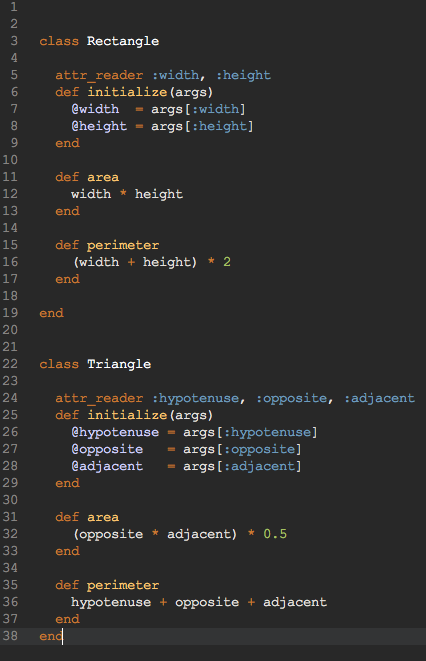
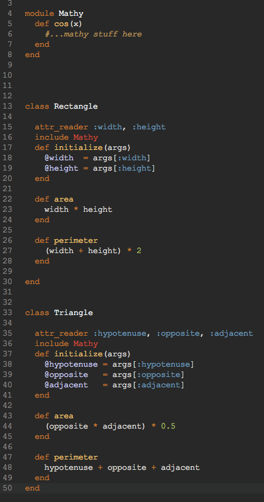

By this point in our learning, we all have a somewhat decent idea of how to instantiate an instance of a class, and how to create a class. A class, generally speaking, is a model for an object, or an object-creation 'factory' that outputs objects that share similar states and behaviors. A state we can also cann an attribute of the class. A behavior of a class we can call a method of class. An object for a rectangle, for example, might have have two attributes -- width and height. It might have specific behaviors, too, like a method to determine its perimeter, or a method to determine its area. Let's see what some classes might look like:
Note how each of these classes have their own, unique behaviors for area and permiter. Because these two object are different, they have different states, and thus different behaviors that these states can take advantage of. That being said, it's easy to imagine these two geometric figures sharing a lot of similar behaviors. When objects share behaviors, we might consider using a module.
A module is best thought of as a library for objects that share roles to tap into. A method is only comprised of behaviors. There are no states, or attributes that the module might hold. The only piece of information a module might contain is what we call a constant -- that is, an unchanging variable that classes can take advantage of when sending and receiving messages.
For example, let's consider a mathematical operation, like cos(x). It's a very realistic possibility that both a square and triangle object will need to employ a cos(x) method, but it wouldn't be a very DRY thing to do to make the same method twice for two different classes. Furthermore, we might run into some issues when we start adding more geometric objects into the mix -- almost all of them would probably need the same method, meaning we'd be repeating ourselves a lot. Let's instead create a Module (and bear with me here -- i know there already exists a Math module) that can mix itself into these classes for their benefit:
Notice how now each of our classes includes the Mathy module. We have now 'mixed-in' the methods associated with Mathy into each of these classes, removing our need for repetition.
One might ask why one would use a module instead of inheritance to solve the problem of shared methods. There are multiple beneifts to using a module over inheritance in these cases. The first, and probably most obvious, is that a Triangle is clearly not a Rectangle. When we ask whether to use inheritance or a module, we are asking the objects in question, "are you guys the same thing? or are you guys clearly different, but contained certain shared roles?" -- the key is understanding the difference between an is-a relationship and a relationship where two different objects share roles.
An additional benefit of modules over inheritance is that modules are more flexible and allow for use in other, perhaps yet to be known, classes that may share certain roles. Inheritance can be useful for very specialized cases, but in general, the shallower the heirarchy of message sending we can have, the better. A module provides a way for a large variety of objects to share a behavior without the need to keep them nested within one another.
That's not to say that inheritance isn't always a bad thing to do -- there may be specialized kinds of triangles (an isosolese triangle) that may be better served as a subclass of the triangle class -- but as a general rule, the less nested your objects and classes are, the better. It makes sense, too -- less nested hierarchies = less traveling for messages between classes = smoother, more 'modular' code, more easily capable of change.
Back to Top